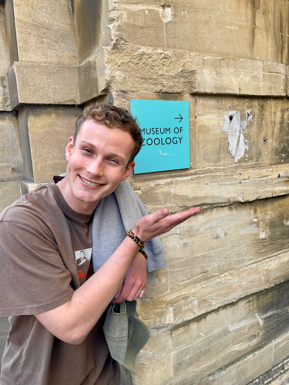

Research Focus
My research spans human–wildlife conflict, movement ecology, and near-term conservation forecasting. I am particularly interested in when, where, and why different kinds of conflict emerge across time and space — and how these insights can inform wildlife management and conservation interventions. Much of my current work focuses on African elephants (Loxodonta africana) in South Africa, combining field ecology with quantitative methods and spatiotemporal modelling.
Education
2023 – Present
PhD, Conservation Science
University of Cambridge
Fieldwork & Geography
South Africa
Congo Basin
Madagascar
Ethiopia
Sierra Leone
United Kingdom